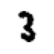
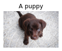
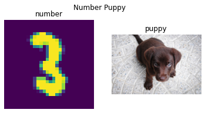
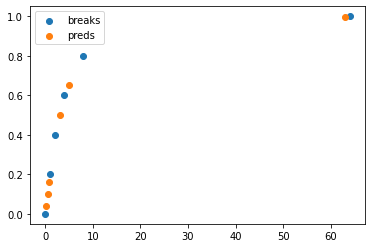
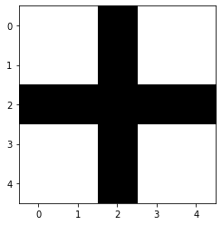
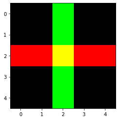
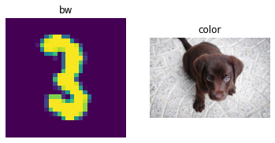

from PIL import ImageTorch Core
Basic pytorch functions used in the fastai/fastrl library
Important: Fastai is not a direct dependency, but we want the ability to use some of the torch utilites offered by fastai, we have this notebook, which has been copied from: fastai. At some point having fastai as a direct dep would be good, however for know we are keeping the number of deps as low as we can.
pv
pv (text, verbose)
equals
equals (a, b)
Compares a and b for equality; supports sublists, tensors and arrays too
one_is_instance
one_is_instance (a, b, t)
noops
noops (x=None, *args, **kwargs)
Do nothing (method)
noop
noop (x=None, *args, **kwargs)
Do nothing
all_equal
all_equal (a, b)
Compares whether a and b are the same length and have the same contents
is_coll
is_coll (o)
Test whether o is a collection (i.e. has a usable len)
is_iter
is_iter (o)
Test whether o can be used in a for loop
setup_cuda
setup_cuda (benchmark=True)
Sets the main cuda device and sets cudnn.benchmark to benchmark
Arrays and show
subplots
subplots (nrows:int=1, ncols:int=1, figsize:tuple=None, imsize:int=3, suptitle:str=None, sharex=False, sharey=False, squeeze=True, subplot_kw=None, gridspec_kw=None, **kwargs)
Returns a figure and set of subplots to display images of imsize inches
| Type | Default | Details | |
|---|---|---|---|
| nrows | int | 1 | Number of rows in returned axes grid |
| ncols | int | 1 | Number of columns in returned axes grid |
| figsize | tuple | None | Width, height in inches of the returned figure |
| imsize | int | 3 | Size (in inches) of images that will be displayed in the returned figure |
| suptitle | str | None | Title to be set to returned figure |
| sharex | bool | False | |
| sharey | bool | False | |
| squeeze | bool | True | |
| subplot_kw | NoneType | None | |
| gridspec_kw | NoneType | None | |
| kwargs | |||
| Returns | (<class ‘matplotlib.figure.Figure’>, <class ‘matplotlib.axes._axes.Axes’>) | Returns both fig and ax as a tuple |
This is used in get_grid. suptitle, sharex, sharey, squeeze, subplot_kw and gridspec_kw are all passed down to plt.subplots.
show_image
show_image (im, ax=None, figsize=None, title=None, ctx=None, cmap=None, norm=None, aspect=None, interpolation=None, alpha=None, vmin=None, vmax=None, origin=None, extent=None, interpolation_stage=None, filternorm=True, filterrad=4.0, resample=None, url=None, data=None, **kwargs)
Show a PIL or PyTorch image on ax.
show_image can show PIL images…
im = Image.open(TEST_IMAGE_BW)
ax = show_image(im, cmap="Greys")
…and color images with standard CHW dim order…
im2 = np.array(Image.open(TEST_IMAGE))
ax = show_image(im2, figsize=(2,2))…and color images with HWC dim order…
im3 = torch.as_tensor(im2).permute(2,0,1)
ax = show_image(im3, figsize=(2,2))
show_titled_image
show_titled_image (o, ax=None, figsize=None, title=None, ctx=None, cmap=None, norm=None, aspect=None, interpolation=None, alpha=None, vmin=None, vmax=None, origin=None, extent=None, interpolation_stage=None, filternorm=True, filterrad=4.0, resample=None, url=None, data=None, **kwargs)
Call show_image destructuring o to (img,title)
show_titled_image((im3,'A puppy'), figsize=(2,2))
Show all images ims as subplots with rows using titles. suptitle provides a way to create a figure title for all images. If you use suptitle, constrained_layout is used unless you set constrained_layout to False.
show_images
show_images (ims, nrows=1, ncols=None, titles=None, figsize:tuple=None, imsize:int=3, suptitle:str=None, sharex=False, sharey=False, squeeze=True, subplot_kw=None, gridspec_kw=None)
Show all images ims as subplots with rows using titles.
| Type | Default | Details | |
|---|---|---|---|
| ims | |||
| nrows | int | 1 | Number of rows in returned axes grid |
| ncols | int | 1 | Number of columns in returned axes grid |
| titles | NoneType | None | |
| figsize | tuple | None | Width, height in inches of the returned figure |
| imsize | int | 3 | Size (in inches) of images that will be displayed in the returned figure |
| suptitle | str | None | Title to be set to returned figure |
| sharex | bool | False | |
| sharey | bool | False | |
| squeeze | bool | True | |
| subplot_kw | NoneType | None | |
| gridspec_kw | NoneType | None | |
| Returns | (<class ‘matplotlib.figure.Figure’>, <class ‘matplotlib.axes._axes.Axes’>) | Returns both fig and ax as a tuple |
show_images((im,im3),titles=('number','puppy'),suptitle='Number Puppy', imsize=3)
ArrayImage, ArrayImageBW and ArrayMask are subclasses of ndarray that know how to show themselves.
ArrayBase
An ndarray that can modify casting behavior
ArrayImageBase
Base class for arrays representing images
ArrayImage
An array representing an image
ArrayImageBW
An array representing an image
ArrayMask
An array representing an image mask
im = Image.open(TEST_IMAGE)im_t = cast(im, ArrayImage)
test_eq(type(im_t), ArrayImage)ax = im_t.show(figsize=(2,2))test_fig_exists(ax)Basics
evaluating
evaluating (model)
Temporarily switch to evaluation mode.
tensor
tensor (x, *rest, dtype=None, device=None, requires_grad=False, pin_memory=False)
Like torch.as_tensor, but handle lists too, and can pass multiple vector elements directly.
test_eq(tensor(torch.tensor([1,2,3])), torch.tensor([1,2,3]))
test_eq(tensor(array([1,2,3])), torch.tensor([1,2,3]))
test_eq(tensor(1,2,3), torch.tensor([1,2,3]))
test_eq_type(tensor(1.0), torch.tensor(1.0))set_seed is useful for reproducibility between runs. It is important to remember that certain classes such as Dataloaders have internal random number generators that is not effected by this function, so this must be run before such objects are created in order to guarantee reproducibility.
set_seed
set_seed (s, reproducible=False)
Set random seed for random, torch, and numpy (where available)
Here is an example of how set_seed can be used to reset the state of random number generators.
set_seed(2*33)
a1 = np.random.random()
a2 = torch.rand(())
a3 = random.random()
set_seed(2*33)
b1 = np.random.random()
b2 = torch.rand(())
b3 = random.random()
print('a\'s: {0:3.3f} {1:3.3f} {2:3.3f}'.format(a1,a2,a3))
print('b\'s: {0:3.3f} {1:3.3f} {2:3.3f}'.format(b1,b2,a3))a's: 0.154 0.498 0.071
b's: 0.154 0.498 0.071test_eq(a1,b1)
test_eq(a2,b2)
test_eq(a3,b3)get_random_states and set_random_states are useful for storing a state so you can go back to it later.
get_random_states
get_random_states ()
Gets states for random, torch, and numpy random number generators
set_random_states
set_random_states (random_state, numpy_state, torch_state, torch_cuda_state, torch_deterministic, torch_benchmark)
Set states for random, torch, and numpy random number generators
Below notice that the old values and rewinded values are the same because we were able to return to the previous state.
old_states = get_random_states()
olds = (random.random(),np.random.random(),torch.rand(()))
news = (random.random(),np.random.random(),torch.rand(()))
set_random_states(**old_states)
rewinds = (random.random(),np.random.random(),torch.rand(()))
print('olds: {0:3.3f} {1:3.3f} {2:3.3f}'.format(*olds))
print('news: {0:3.3f} {1:3.3f} {2:3.3f}'.format(*news))
print('rewinds: {0:3.3f} {1:3.3f} {2:3.3f}'.format(*rewinds))olds: 0.435 0.134 0.023
news: 0.246 0.363 0.227
rewinds: 0.435 0.134 0.023test_ne(olds,news)
test_eq(olds,rewinds)In no_random we combine the ideas of rewinding state with get_random_states and set_random_states with the ability to set_seed and create a context manager that can allow us to control randomness in a portion of our code.
Note: Similar to torch.random.fork_rng, but also with numpy and random
no_random
no_random (seed=42, reproducible=True)
Stores and retrieves state of random number generators. Sets random seed for random, torch, and numpy.
Here are some examples on how we can use no_random to control the randomness within a block of code.
states=get_random_states()
olds = (random.random(),np.random.random(),torch.rand(()))
set_random_states(**states) #rewinding above random calls
with no_random():
new1 = (random.random(),np.random.random(),torch.rand(()))
with no_random():
new2 = (random.random(),np.random.random(),torch.rand(()))
with no_random(seed=100):
seeded1 = (random.random(),np.random.random(),torch.rand(()))
with no_random(seed=100):
seeded2 = (random.random(),np.random.random(),torch.rand(()))
rewinds = (random.random(),np.random.random(),torch.rand(()))
print('olds: {0:3.3f} {1:3.3f} {2:3.3f}'.format(*olds))
print('new1: {0:3.3f} {1:3.3f} {2:3.3f}'.format(*new1))
print('new2: {0:3.3f} {1:3.3f} {2:3.3f}'.format(*new2))
print('seeded1: {0:3.3f} {1:3.3f} {2:3.3f}'.format(*seeded1))
print('seeded2: {0:3.3f} {1:3.3f} {2:3.3f}'.format(*seeded2))
print('rewinds: {0:3.3f} {1:3.3f} {2:3.3f}'.format(*rewinds))olds: 0.246 0.363 0.227
new1: 0.639 0.375 0.882
new2: 0.639 0.375 0.882
seeded1: 0.146 0.543 0.112
seeded2: 0.146 0.543 0.112
rewinds: 0.246 0.363 0.227Notice that olds, and rewinds are alos both equal to each other. From this we can see that everything in the with blocks did not update the state outside of the block. Inside of the block, the state is reset for any particular seed, so for the same seed you should get the same random number generator results.
Note: It is important to remember that classes like Dataloader have internal random number generators, and no_random will have no effect on those random number generators.
test_ne(olds,new1)
test_eq(new1,new2)
test_ne(new1,seeded1)
test_eq(seeded1,seeded2)
test_eq(olds,rewinds)unsqueeze
unsqueeze (x, dim=-1, n=1)
Same as torch.unsqueeze but can add n dims
t = tensor([1])
t2 = unsqueeze(t, n=2)
test_eq(t2,t[:,None,None])unsqueeze_
unsqueeze_ (x, dim=-1, n=1)
Same as torch.unsqueeze_ but can add n dims
t = tensor([1])
unsqueeze_(t, n=2)
test_eq(t, tensor([1]).view(1,1,1))apply
apply (func, x, *args, **kwargs)
Apply func recursively to x, passing on args
maybe_gather
maybe_gather (x, axis=0)
Gather copies of x on axis (if training is distributed)
to_detach
to_detach (b, cpu=True, gather=True)
Recursively detach lists of tensors in b; put them on the CPU if cpu=True.
gather only applies during distributed training and the result tensor will be the one gathered across processes if gather=True (as a result, the batch size will be multiplied by the number of processes).
to_half
to_half (b)
Recursively map lists of tensors in b to FP16.
to_float
to_float (b)
Recursively map lists of int tensors in b to float.
default_device
default_device (use_cuda=-1)
Return or set default device; use_cuda: None - CUDA if available; True - error if not available; False - CPU
default_device
default_device (use=-1)
Return or set default device; use_cuda: -1 - CUDA/mps if available; True - error if not available; False - CPU
if torch.cuda.is_available():
_td = torch.device(torch.cuda.current_device())
test_eq(default_device(-1), _td)
test_eq(default_device(True), _td)
else:
test_eq(default_device(False), torch.device('cpu'))
default_device(-1);to_device
to_device (b, device=None, non_blocking=False)
Recursively put b on device.
t = to_device((3,(tensor(3),tensor(2))))
t1,(t2,t3) = tif torch.cuda.is_available():
test_eq_type(t,(3,(tensor(3).cuda(),tensor(2).cuda())))
test_eq(t2.type(), "torch.cuda.LongTensor")
test_eq(t3.type(), "torch.cuda.LongTensor")to_cpu
to_cpu (b)
Recursively map lists of tensors in b to the cpu.
t3 = to_cpu(t3)
test_eq(t3.type(), "torch.LongTensor")
test_eq(t3, 2)to_np
to_np (x)
Convert a tensor to a numpy array.
t3 = to_np(t3)
test_eq(type(t3), np.ndarray)
test_eq(t3, 2)to_concat
to_concat (xs, dim=0)
Concat the element in xs (recursively if they are tuples/lists of tensors)
test_eq(to_concat([tensor([1,2]), tensor([3,4])]), tensor([1,2,3,4]))
test_eq(to_concat([tensor([[1,2]]), tensor([[3,4]])], dim=1), tensor([[1,2,3,4]]))
test_eq_type(to_concat([(tensor([1,2]), tensor([3,4])), (tensor([3,4]), tensor([5,6]))]), (tensor([1,2,3,4]), tensor([3,4,5,6])))
test_eq_type(to_concat([[tensor([1,2]), tensor([3,4])], [tensor([3,4]), tensor([5,6])]]), [tensor([1,2,3,4]), tensor([3,4,5,6])])
test_eq_type(to_concat([(tensor([1,2]),), (tensor([3,4]),)]), (tensor([1,2,3,4]),))
test_eq(to_concat([tensor([[1,2]]), tensor([[3,4], [5,6]])], dim=1), [tensor([1]),tensor([3, 5]),tensor([4, 6])])test_eq(type(to_concat([dict(foo=tensor([1,2]), bar=tensor(3,4))])), dict)Tensor subtypes
Tensor.set_meta
Tensor.set_meta (x, as_copy=False)
Set all metadata in __dict__
Tensor.as_subclass
Tensor.as_subclass (typ)
Cast to typ and include __dict__ and meta
Tensor.set_meta and Tensor.as_subclass work together to maintain __dict__ after casting.
class _T(Tensor): pass
t = tensor(1.).requires_grad_()
t.img_size = 1
t2 = t.as_subclass(_T)
test_eq(t.img_size, t2.img_size)
test_eq(t2.img_size, 1)
assert(t2.requires_grad_)TensorBase
TensorBase (x, **kwargs)
A Tensor which support subclass pickling, and maintains metadata when casting or after methods
TensorBase hooks into __torch_function__ to ensure metadata is not lost. To see all functions being called, set debug.
a = TensorBase(1)
a.debug=True
1/(a+1)TensorBase(0.5000)TensorBase and its subclasses also allow for passing through metadata size as img_size…
from torch.utils.data._utils.collate import default_collatea = TensorBase(1,img_size=(128,128))
test_eq(a.img_size,(128,128))
b = cast(a,TensorBase)
test_eq(b.img_size,(128,128))
test_eq(torch.stack([a,b],0).img_size,(128,128))
test_eq(default_collate([a,b]).img_size,(128,128))class _TImage(TensorBase): pass
class _TImage2(_TImage): pass
t1 = _TImage([1.])
t2 = _TImage2([1.])
t2+t1_TImage2([2.])class _T(TensorBase): pass
t = _T(range(5))
test_eq(t[0], 0)
test_eq_type(t+1, _T(range(1,6)))
test_eq(repr(t), '_T([0, 1, 2, 3, 4])')
test_eq_type(t[_T([False,False,True,True,True])], _T([2,3,4]))
test_eq_type(t[_T([2,3,4])], _T([2,3,4]))
test_eq(type(pickle.loads(pickle.dumps(t))), _T)
test_eq_type(t.new_ones(1), _T([1]))
test_eq_type(t.new_tensor([1,2]), _T([1,2]))t = tensor([1,2,3])
m = TensorBase([False,True,True])
test_eq(t[m], tensor([2,3]))
t = tensor([[1,2,3],[1,2,3]])
m = cast(tensor([[False,True,True],
[False,True,True]]), TensorBase)
test_eq(t[m], tensor([2,3,2,3]))t = tensor([[1,2,3],[1,2,3]])
t.img_size = 1
t2 = cast(t, TensorBase)
test_eq(t2.img_size, t.img_size)
x = retain_type(tensor([4,5,6]), t2)
test_eq(x.img_size, t.img_size)
t3 = TensorBase([[1,2,3],[1,2,3]], img_size=1)
test_eq(t3.img_size, t.img_size)
t4 = t2+1
t4.img_size = 2
test_eq(t2.img_size, 1)
test_eq(t4.img_size, 2)
# this will fail with `Tensor` but works with `TensorBase`
test_eq(pickle.loads(pickle.dumps(t2)).img_size, t2.img_size)TensorImageBase
TensorImageBase (x, **kwargs)
A Tensor which support subclass pickling, and maintains metadata when casting or after methods
TensorImage
TensorImage (x, **kwargs)
A Tensor which support subclass pickling, and maintains metadata when casting or after methods
TensorImageBW
TensorImageBW (x, **kwargs)
A Tensor which support subclass pickling, and maintains metadata when casting or after methods
TensorMask
TensorMask (x, **kwargs)
A Tensor which support subclass pickling, and maintains metadata when casting or after methods
im = Image.open(TEST_IMAGE)
im_t = cast(array(im), TensorImage)
test_eq(type(im_t), TensorImage)im_t2 = cast(tensor(1), TensorMask)
test_eq(type(im_t2), TensorMask)
test_eq(im_t2, tensor(1))
ax = im_t.show(figsize=(2,2))
_ =(im_t == im_t2)
test_fig_exists(ax)Operations between TensorMask and TensorImageBase objects return the type of the TensorImageBase object:
a = TensorMask([1,2])
test_eq_type(TensorImage(1)+a, TensorImage([2,3]))
test_eq_type(1-a, TensorMask([0,-1]))TensorFlowField
TensorFlowField (x, **kwargs)
A Tensor which support subclass pickling, and maintains metadata when casting or after methods
t1 = TensorImage([1.]).view(1,1,1,1)
t2 = TensorFlowField([1.,1.]).view(1,1,1,2)
test_eq_type(F.grid_sample(t1, t2), TensorImage([[[[0.25]]]]))TensorCategory
TensorCategory (x, **kwargs)
A Tensor which support subclass pickling, and maintains metadata when casting or after methods
tc = TensorCategory([1,2,3])
mask_t = TensorMask([0,2,4,5])
im_t = TensorImage([0,2,4,5])
test_eq(mask_t[tc], tensor([2,4,5]))
test_eq(im_t[tc], tensor([2,4,5]))TensorMultiCategory
TensorMultiCategory (x, **kwargs)
A Tensor which support subclass pickling, and maintains metadata when casting or after methods
TitledTensorScalar
TitledTensorScalar (x, **kwargs)
A tensor containing a scalar that has a show method
L.cat
L.cat (dim=0)
Same as torch.cat
L.stack
L.stack (dim=0)
Same as torch.stack
L.tensored
L.tensored ()
mapped(tensor)
L.tensored
L.tensored ()
mapped(tensor)
There are shortcuts for torch.stack and torch.cat if your L contains tensors or something convertible. You can manually convert with tensored.
t = L(([1,2],[3,4]))
test_eq(t.tensored(), [tensor(1,2),tensor(3,4)])L.stack
L.stack (dim=0)
Same as torch.stack
test_eq(t.stack(), tensor([[1,2],[3,4]]))L.cat
L.cat (dim=0)
Same as torch.cat
test_eq(t.cat(), tensor([1,2,3,4]))Chunks
concat
concat (*ls)
Concatenate tensors, arrays, lists, or tuples
a,b,c = [1],[1,2],[1,1,2]
test_eq(concat(a,b), c)
test_eq_type(concat(tuple (a),tuple (b)), tuple (c))
test_eq_type(concat(array (a),array (b)), array (c))
test_eq_type(concat(tensor(a),tensor(b)), tensor(c))
test_eq_type(concat(TensorBase(a),TensorBase(b)), TensorBase(c))
test_eq_type(concat([1,1],1), [1,1,1])
test_eq_type(concat(1,1,1), L(1,1,1))
test_eq_type(concat(L(1,2),1), L(1,2,1))Chunks
Chunks (chunks, lens=None)
Slice and int indexing into a list of lists
docs = L(list(string.ascii_lowercase[a:b]) for a,b in ((0,3),(3,7),(7,8),(8,16),(16,24),(24,26)))
b = Chunks(docs)
test_eq([b[ o] for o in range(0,5)], ['a','b','c','d','e'])
test_eq([b[-o] for o in range(1,6)], ['z','y','x','w','v'])
test_eq(b[6:13], 'g,h,i,j,k,l,m'.split(','))
test_eq(b[20:77], 'u,v,w,x,y,z'.split(','))
test_eq(b[:5], 'a,b,c,d,e'.split(','))
test_eq(b[:2], 'a,b'.split(','))t = torch.arange(26)
docs = L(t[a:b] for a,b in ((0,3),(3,7),(7,8),(8,16),(16,24),(24,26)))
b = Chunks(docs)
test_eq([b[ o] for o in range(0,5)], range(0,5))
test_eq([b[-o] for o in range(1,6)], [25,24,23,22,21])
test_eq(b[6:13], torch.arange(6,13))
test_eq(b[20:77], torch.arange(20,26))
test_eq(b[:5], torch.arange(5))
test_eq(b[:2], torch.arange(2))docs = L(TensorBase(t[a:b]) for a,b in ((0,3),(3,7),(7,8),(8,16),(16,24),(24,26)))
b = Chunks(docs)
test_eq_type(b[:2], TensorBase(range(2)))
test_eq_type(b[:5], TensorBase(range(5)))
test_eq_type(b[9:13], TensorBase(range(9,13)))Simple types
show_title
show_title (o, ax=None, ctx=None, label=None, color='black', **kwargs)
Set title of ax to o, or print o if ax is None
test_stdout(lambda: show_title("title"), "title")
# ensure that col names are unique when showing to a pandas series
assert show_title("title", ctx=pd.Series(dict(a=1)), label='a').equals(pd.Series(dict(a=1,a_='title')))ShowTitle
ShowTitle ()
Base class that adds a simple show
TitledInt
An int with show
TitledStr
An str with show
TitledFloat
TitledFloat (x=0)
A float with show
test_stdout(lambda: TitledStr('s').show(), 's')
test_stdout(lambda: TitledInt(1).show(), '1')TitledTuple
TitledTuple (x=None, *rest)
A fastuple with show
TitledStr.truncate
TitledStr.truncate (n)
Truncate self to n
Other functions
get_empty_df
get_empty_df (n)
Return n empty rows of a dataframe
display_df
display_df (df)
Display df in a notebook or defaults to print
get_first
get_first (c)
Get the first element of c, even if c is a dataframe
one_param
one_param (m)
First parameter in m
item_find
item_find (x, idx=0)
Recursively takes the idx-th element of x
find_device
find_device (b)
Recursively search the device of b.
t2 = to_device(tensor(0))
dev = default_device()
test_eq(find_device(t2), dev)
test_eq(find_device([t2,t2]), dev)
test_eq(find_device({'a':t2,'b':t2}), dev)
test_eq(find_device({'a':[[t2],[t2]],'b':t2}), dev)find_bs
find_bs (b)
Recursively search the batch size of b.
x = torch.randn(4,5)
x1 = [1,2,3]
test_eq(find_bs(x1), 3)
test_eq(find_bs(x), 4)
test_eq(find_bs((x,x)), 4)
test_eq(find_bs([x, x]), 4)
test_eq(find_bs({'a':x,'b':x}), 4)
test_eq(find_bs({'a':[[x],[x]],'b':x}), 4)np_func
np_func (f)
Convert a function taking and returning numpy arrays to one taking and returning tensors
This decorator is particularly useful for using numpy functions as fastai metrics, for instance:
from sklearn.metrics import f1_score@np_func
def f1(inp,targ): return f1_score(targ, inp)
a1,a2 = array([0,1,1]),array([1,0,1])
t = f1(tensor(a1),tensor(a2))
test_eq(f1_score(a1,a2), t)
assert isinstance(t,Tensor)Module
Module ()
Same as nn.Module, but no need for subclasses to call super().__init__
class _T(Module):
def __init__(self): self.f = nn.Linear(1,1)
def forward(self,x): return self.f(x)
t = _T()
t(tensor([1.]))tensor([-0.0832], grad_fn=<AddBackward0>)get_model
get_model (model)
Return the model maybe wrapped inside model.
one_hot
one_hot (x, c)
One-hot encode x with c classes.
test_eq(one_hot([1,4], 5), tensor(0,1,0,0,1).byte())
test_eq(one_hot(torch.tensor([]), 5), tensor(0,0,0,0,0).byte())
test_eq(one_hot(2, 5), tensor(0,0,1,0,0).byte())one_hot_decode
one_hot_decode (x, vocab=None)
test_eq(one_hot_decode(tensor(0,1,0,0,1)), [1,4])
test_eq(one_hot_decode(tensor(0,0,0,0,0)), [ ])
test_eq(one_hot_decode(tensor(0,0,1,0,0)), [2 ])params
params (m)
Return all parameters of m
trainable_params
trainable_params (m)
Return all trainable parameters of m
m = nn.Linear(4,5)
test_eq(trainable_params(m), [m.weight, m.bias])
m.weight.requires_grad_(False)
test_eq(trainable_params(m), [m.bias])norm_bias_params
norm_bias_params (m, with_bias=True)
Return all bias and BatchNorm parameters
for norm_func in [nn.BatchNorm1d, partial(nn.InstanceNorm1d, affine=True)]:
model = nn.Sequential(nn.Linear(10,20), norm_func(20), nn.Conv1d(3,4, 3))
test_eq(norm_bias_params(model), [model[0].bias, model[1].weight, model[1].bias, model[2].bias])
model = nn.ModuleList([nn.Linear(10,20, bias=False), nn.Sequential(norm_func(20), nn.Conv1d(3,4,3))])
test_eq(norm_bias_params(model), [model[1][0].weight, model[1][0].bias, model[1][1].bias])
model = nn.ModuleList([nn.Linear(10,20), nn.Sequential(norm_func(20), nn.Conv1d(3,4,3))])
test_eq(norm_bias_params(model, with_bias=False), [model[1][0].weight, model[1][0].bias])batch_to_samples
batch_to_samples (b, max_n=10)
‘Transposes’ a batch to (at most max_n) samples
t = tensor([1,2,3])
test_eq(batch_to_samples([t,t+1], max_n=2), ([1,2],[2,3]))
test_eq(batch_to_samples(tensor([1,2,3]), 10), [1, 2, 3])
test_eq(batch_to_samples([tensor([1,2,3]), tensor([4,5,6])], 10), [(1, 4), (2, 5), (3, 6)])
test_eq(batch_to_samples([tensor([1,2,3]), tensor([4,5,6])], 2), [(1, 4), (2, 5)])
test_eq(batch_to_samples([tensor([1,2,3]), [tensor([4,5,6]),tensor([7,8,9])]], 10),
[(1, (4, 7)), (2, (5, 8)), (3, (6, 9))])
test_eq(batch_to_samples([tensor([1,2,3]), [tensor([4,5,6]),tensor([7,8,9])]], 2), [(1, (4, 7)), (2, (5, 8))])
t = fastuple(tensor([1,2,3]),TensorBase([2,3,4]))
test_eq_type(batch_to_samples(t)[0][1], TensorBase(2))
test_eq(batch_to_samples(t).map(type), [fastuple]*3)Tensor.interp_1d
Tensor.interp_1d (x:torch.Tensor, xp, fp)
Same as np.interp
brks = tensor(0,1,2,4,8,64).float()
ys = tensor(range_of(brks)).float()
ys /= ys[-1].item()
pts = tensor(0.2,0.5,0.8,3,5,63)
preds = pts.interp_1d(brks, ys)
test_close(preds.numpy(), np.interp(pts.numpy(), brks.numpy(), ys.numpy()))
plt.scatter(brks,ys)
plt.scatter(pts,preds)
plt.legend(['breaks','preds']);
Tensor.pca
Tensor.pca (x:torch.Tensor, k=2)
Compute PCA of x with k dimensions.
logit
logit (x)
Logit of x, clamped to avoid inf.
num_distrib
num_distrib ()
Return the number of processes in distributed training (if applicable).
rank_distrib
rank_distrib ()
Return the distributed rank of this process (if applicable).
distrib_barrier
distrib_barrier ()
Place a synchronization barrier in distributed training
After calling this, ALL sub-processes in the pytorch process group must arrive here before proceeding.
Path.save_array
Path.save_array (p:pathlib.Path, o, complib='lz4', lvl=3)
Save numpy array to a compressed pytables file, using compression level lvl
Compression lib can be any of: blosclz, lz4, lz4hc, snappy, zlib or zstd.
Path.load_array
Path.load_array (p:pathlib.Path)
Save numpy array to a pytables file
base_doc
base_doc (elt)
Print a base documentation of elt
doc
doc (elt)
Try to use doc form nbdev and fall back to base_doc
nested_reorder
nested_reorder (t, idxs)
Reorder all tensors in t using idxs
x = tensor([0,1,2,3,4,5])
idxs = tensor([2,5,1,0,3,4])
test_eq_type(nested_reorder(([x], x), idxs), ([idxs], idxs))
y = L(0,1,2,3,4,5)
z = L(i.item() for i in idxs)
test_eq_type(nested_reorder((y, x), idxs), (z,idxs))flatten_check
flatten_check (inp, targ)
Check that out and targ have the same number of elements and flatten them.
x1,x2 = torch.randn(5,4),torch.randn(20)
x1,x2 = flatten_check(x1,x2)
test_eq(x1.shape, [20])
test_eq(x2.shape, [20])
x1,x2 = torch.randn(5,4),torch.randn(21)
test_fail(lambda: flatten_check(x1,x2))Image helpers
make_cross_image
make_cross_image (bw=True)
Create a tensor containing a cross image, either bw (True) or color
plt.imshow(make_cross_image(), cmap="Greys");
plt.imshow(make_cross_image(False).permute(1,2,0));
show_image_batch
show_image_batch (b, show=<function show_titled_image>, items=9, cols=3, figsize=None, **kwargs)
Display batch b in a grid of size items with cols width
show_image_batch(([Image.open(TEST_IMAGE_BW),Image.open(TEST_IMAGE)],['bw','color']), items=2)
Model init
requires_grad
requires_grad (m)
Check if the first parameter of m requires grad or not
tst = nn.Linear(4,5)
assert requires_grad(tst)
for p in tst.parameters(): p.requires_grad_(False)
assert not requires_grad(tst)init_default
init_default (m, func=<function kaiming_normal_>)
Initialize m weights with func and set bias to 0.
tst = nn.Linear(4,5)
tst.weight.data.uniform_(-1,1)
tst.bias.data.uniform_(-1,1)
tst = init_default(tst, func = lambda x: x.data.fill_(1.))
test_eq(tst.weight, torch.ones(5,4))
test_eq(tst.bias, torch.zeros(5))cond_init
cond_init (m, func)
Apply init_default to m unless it’s a batchnorm module
tst = nn.Linear(4,5)
tst.weight.data.uniform_(-1,1)
tst.bias.data.uniform_(-1,1)
cond_init(tst, func = lambda x: x.data.fill_(1.))
test_eq(tst.weight, torch.ones(5,4))
test_eq(tst.bias, torch.zeros(5))
tst = nn.BatchNorm2d(5)
init = [tst.weight.clone(), tst.bias.clone()]
cond_init(tst, func = lambda x: x.data.fill_(1.))
test_eq(tst.weight, init[0])
test_eq(tst.bias, init[1])apply_leaf
apply_leaf (m, f)
Apply f to children of m.
tst = nn.Sequential(nn.Linear(4,5), nn.Sequential(nn.Linear(4,5), nn.Linear(4,5)))
apply_leaf(tst, partial(init_default, func=lambda x: x.data.fill_(1.)))
for l in [tst[0], *tst[1]]: test_eq(l.weight, torch.ones(5,4))
for l in [tst[0], *tst[1]]: test_eq(l.bias, torch.zeros(5))apply_init
apply_init (m, func=<function kaiming_normal_>)
Initialize all non-batchnorm layers of m with func.
tst = nn.Sequential(nn.Linear(4,5), nn.Sequential(nn.Linear(4,5), nn.BatchNorm1d(5)))
init = [tst[1][1].weight.clone(), tst[1][1].bias.clone()]
apply_init(tst, func=lambda x: x.data.fill_(1.))
for l in [tst[0], tst[1][0]]: test_eq(l.weight, torch.ones(5,4))
for l in [tst[0], tst[1][0]]: test_eq(l.bias, torch.zeros(5))
test_eq(tst[1][1].weight, init[0])
test_eq(tst[1][1].bias, init[1])autograd jit functions
script_use_ctx
script_use_ctx (f)
Decorator: create jit script and pass everything in ctx.saved_variables tof, after*args`
script_save_ctx
script_save_ctx (static, *argidx)
Decorator: create jit script and save args with indices argidx using ctx.save_for_backward
script_fwd
script_fwd (*argidx)
Decorator: create static jit script and save args with indices argidx using ctx.save_for_backward
script_bwd
script_bwd (f)
Decorator: create static jit script and pass everything in ctx.saved_variables tof, after*args`
grad_module
grad_module (cls)
Decorator: convert cls into an autograd function
ismin_torch
ismin_torch (min_version)
Check if torch.__version__ >= min_version using packaging.version
notmax_torch
notmax_torch (max_version)
Check if torch.__version__ < max_version using packaging.version